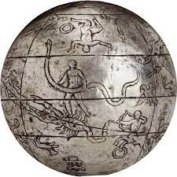

Vers l’adoption expliquée du mot « sphère » dans le vocabulaire latin…
Sphaera, globus ?

Dans le Timée de Platon, la forme du cosmos+ révèle une volonté de perfection chez Celui qui l’a formé. Pour traduire cette forme qui est un mot clé, sans équivalent dans la langue latine, Cicéron commente son choix de traduction :
hunc ea forma figuravit qua una omnes formae reliquae concluduntur, et globosum est fabricatus, quod σφαιροειδέϛ Graeci vocant
Ce passage du Timée de Platon (33b) paraît capital pour Cicéron, qui le traduit non seulement ici, dans son travail sur le Timaeus, mais aussi dans La Nature des Dieux (II, 47). A chaque fois, il garde le mot grec (σφαιροειδέϛ ) et l’associe au mot latin qui lui paraît le plus adéquat (globus).
Il souligne toutefois la différence de champs : parce que le terme latin ne qualifie pas a priori des entités de façon géométrique, il développe son propos pour mieux expliciter ce que contient l’idée de sphère+.
-
La sphère est un objet mathématique qui ne nécessite pas de notion d'intériorité ou d'extériorité. Elle est surtout convoquée en astronomie.
-
Le globe+, lui, est un volume qui peut être sphérique ou non - comme l'est aujourd'hui le globe terrestre qui relève de la géométrie du monde, qui est une sphère légèrement applatie. Mais la Terre à l'époque est perçue comme une surface plane, ou légèrement incurvée, ronde, au-dessus de laquelle le Ciel+ pourrait correspondre à un unique hémisphère. Le globe est un volume sphérique mais est nécessairement placé dans un espace : il suppose donc une extériorité. Son domaine d'application est davantage ancré dans la science expérimentale.
Le pourtour+ de la sphère de la Mosaïque des Philosophes que marque le réseau de cercles entrecroisés est probablement à la fois la représentation des orbites des planètes et le raisonnement tel que le Timée l'expose.
-
Quand Cicéron traduisait des passages du poème d'Arastus sur les Phénomènes, il adoptait le vocabulaire lié au monde sensible. Dans le De Fato, et le De natura deorum, oeuvres philosophiques, il emploie le nom latinisé de sphaera, pour s'inscrire dans le monde intelligible qu'il développe.
-
Dans le Timée cette scission entre ces mondes semble plus ténue que jamais. Elle va sans doute expliquer le glissement dans la représentation des symboles de l'univers.